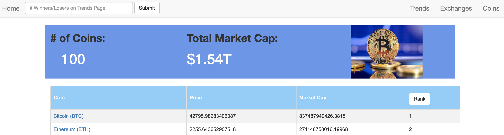

DATA · FINTECH · WEB DEVELOPMENT
Crypto Market Analysis
A cryptocurrency analytics website that uses the CoinCap API to retrieve market data across 100 coins and 73 exchanges. Users can explore prices, market capitalization, exchange activity, and top gainers and losers over a 24-hour period.
Built an object-oriented Python application with a SQLite database, using SQLAlchemy to manage coin and exchange data. Developed interactive pages and tables with Flask, HTML, and CSS.
View on GitHub